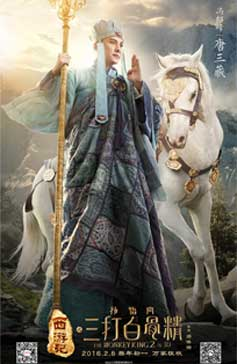
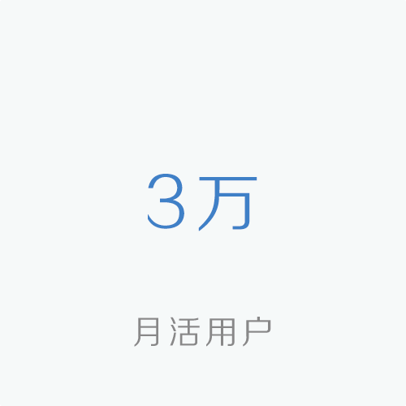
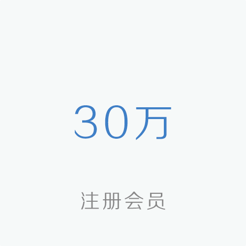
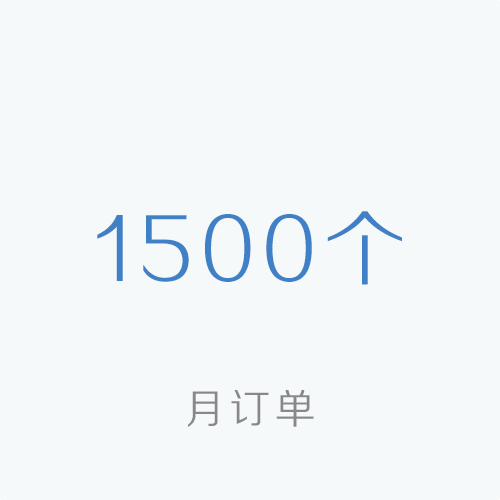

项目简介
该公司成立于1999年，是国内最具影响力的民营娱乐内容供应商之一；
是集综艺节目、电视剧、电影的投资制作和发行、广告销售、跨媒体整合营销推广于一身的国际性传媒集团。
公司成立15年来，秉承“欢乐传播，创值传媒”的企业精神，已建立起公司特有的电视、平面媒体、互联网相结合的传媒资源网，并与国内一线卫视平台、最强势的互联网平台结成紧密的战略合作。
历史融资纪录
投资回报
测试案例分析，是国内最具影响力的民营娱乐内容供应商之一；
是集综艺节目、电视剧、电影的投资制作和发行、广告销售、跨媒体整合营销推广于一身的国际性传媒集团。
公司成立15年来，秉承“欢乐传播，创值传媒”的企业精神，已建立起公司特有的电视、平面媒体、互联网相结合的传媒资源网，并与国内一线卫视平台、最强势的互联网平台结成紧密的战略合作。
项目亮点
目前整个影视产业链条，非业内人士只能从立项阶段切入，到拍摄与宣发阶段，投资成本高、回报率低；要求投资人最低投资额500万并且有行业内资源，投资门槛偏高。
从影视产业链最上游切入资本和资源，购买创作原始IP（版权、著作权），并开发剧本，使原始IP电影化，以低成本换
取高利益。
行业背景
测试案例分析，是国内最具影响力的民营娱乐内容供应商之一；
是集综艺节目、电视剧、电影的投资制作和发行、广告销售、跨媒体整合营销推广于一身的国际性传媒集团。
公司成立15年来，秉承“欢乐传播，创值传媒”的企业精神，已建立起公司特有的电视、平面媒体、互联网相结合的传媒资源网，并与国内一线卫视平台、最强势的互联网平台结成紧密的战略合作。
商业模式
该公司已经熟练的投资上游链条，有着从原始IP、开发剧本到寻找导演、演员，从成立项目公司到拍摄并寻找投资方到基本完整到体系。
-

北大街曾经就
疯狂动物城
-

北大街曾经就
飞鹰艾迪
-

北大街曾经就
三打白骨精
发展现状



发展规划
测试案例分析，是国内最具影响力的民营娱乐内容供应商之一；
是集综艺节目、电视剧、电影的投资制作和发行、广告销售、跨媒体整合营销推广于一身的国际性传媒集团。
公司成立15年来，秉承“欢乐传播，创值传媒”的企业精神，已建立起公司特有的电视、平面媒体、互联网相结合的传媒资源网，并与国内一线卫视平台、最强势的互联网平台结成紧密的战略合作。
团队介绍
程政
董事长
投资制作和发行、广告销售、跨媒体整合营销推广于一身的国际性传媒集团。 公司成立15年来，秉承“欢乐传播，创值传媒”的企业精神，已建立投资制作和发行、广告销售、跨媒体整合营销推广于一身的国际性传媒集团。 公司成立15年来，秉承“欢乐传播，创值传媒”的企业精神，已建立
程政
董事长
投资制作和发行、广告销售、跨媒体整合营销推广于一身的国际性传媒集团。 公司成立15年来，秉承“欢乐传播，创值传媒”的企业精神，已建立投资制作和发行、广告销售、跨媒体整合营销推广于一身的国际性传媒集团。 公司成立15年来，秉承“欢乐传播，创值传媒”的企业精神，已建立